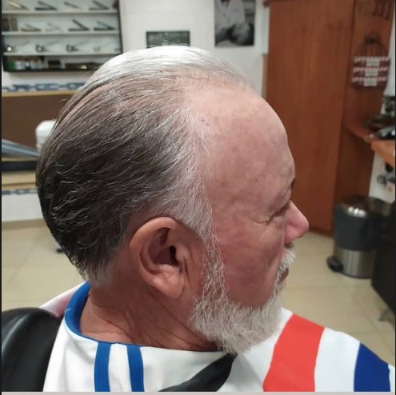
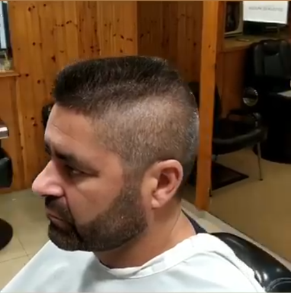
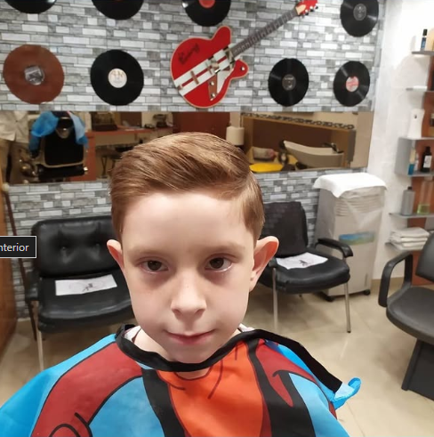
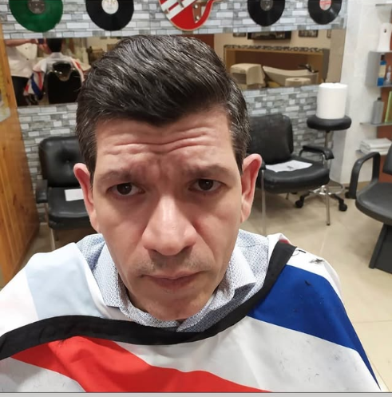
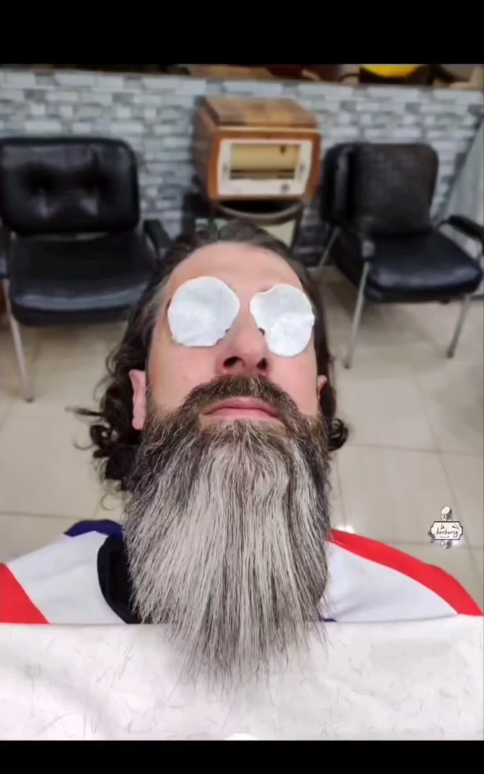
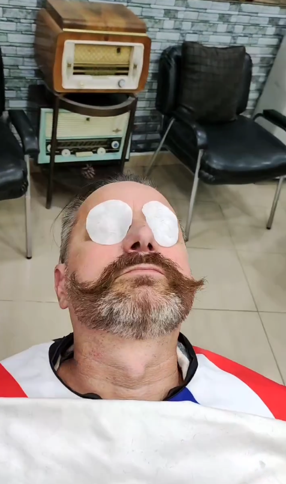
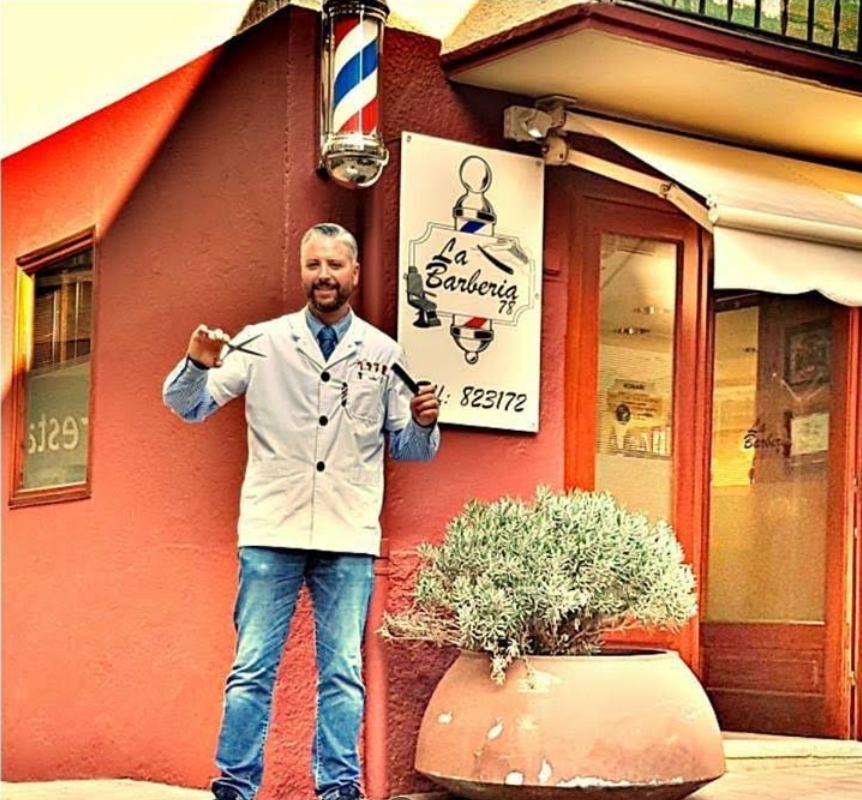

Tu barbería de confianza en Andorra la Vella desde 2018.
Cortes de precisión milimétrica, arreglo de barba tradicional y rituales de afeitado clásico con navaja.
Nuestros Servicios y Tratamientos
El arte de la barbería tradicional combinado con las técnicas contemporáneas más exigentes.
Corte de cabello clásico: peine y tijera o peine y navaja
Corte artesanal realizado con peine y tijera, con peine y navaja tradicional. Incluye lavado capilar, perfilado milimétrico y peinado con acabado profesional.
Corte de cabello a máquina
Corte limpio y uniforme realizado íntegramente con máquina cortapelo, incluyendo repaso de contornos, patillas y cuello.
Corte de cabello a niños
Dedicación, paciencia y máxima atención para los más jóvenes de la casa, adaptando el estilo según su gusto.
Afeitado clásico
Delimitado y arreglo preciso de barba con navaja, tratamiento hidratante y bálsamo reconfortante.
Afeitado tradicional
Experiencia clásica completa con doble toalla caliente, enjabonado con brocha, rasurado a navaja y masaje facial relax.
Arreglo de barba
Recorte, perfilado de líneas y rebaje de volumen de barba según las facciones del rostro.
¿Dudas con la longitud o el estilo? Realizamos una breve sesión de visagismo sin coste antes de comenzar cualquier corte.
Galería de Trabajos
La maestría y precisión detrás de cada acabado. Resultados auténticos de nuestros clientes habituales.

Corte de Cabello Clásico
Peinado con peine y tijera, acabado impecable.

Corte de Cabello a Máquina
Corte limpio y uniforme con perfilado de contornos.

Corte de Cabello a Niños
Máxima paciencia y acabado profesional para los más jóvenes.

Corte con Acabado Profesional
Perfilado milimétrico y peinado con acabado de lujo.

Ritual de Afeitado Tradicional
Compresas y tratamiento relajante en el sillón de barbería.

Afeitado y Arreglo de Bigote
Perfilado artesanal a navaja con acabado de lujo.

Tradición, Precisión y Pasión por el Oficio
Fundada en 2018 en Andorra la Vella, La Barbería 78 nació con una premisa inquebrantable: rescatar el ritual genuino del barbero de toda la vida y elevarlo al nivel de exigencia contemporáneo.
Formados en las más reconocidas academias europeas de alta barbería clásica, entendemos cada corte no como una transacción apresurada, sino como una pausa necesaria en el ritmo diario. Nuestro compromiso es la atención individual sin solapamientos: el tiempo asignado a tu sillón es exclusivamente tuyo.
Lo que opinan nuestros clientes
"Llevo viniendo desde 2019 y no cambio por nada. La atención al detalle en el degradado y el ritual de la toalla caliente en la barba es insuperable."
"El mejor afeitado tradicional de todo Andorra. Ambiente acogedor, puntualidad británica y un trato de 10. Salir de allí es como renacer."
"Gran profesionalidad y asesoramiento sobre qué tipo de barba me favorecía. Productos de primer nivel y un local con un gusto impecable."
"Puntuales, pulcros y meticulosos con la navaja. Siempre salgo satisfecho al 100%. Totalmente recomendable reservar con algo de antelación."
Preguntas Frecuentes
Reserva tu Cita por Teléfono
Para garantizar una atención exclusiva y sin esperas en nuestro salón, las citas se gestionan únicamente mediante llamada telefónica.
Visítanos en el Centro Histórico
Dirección
Cap del Carrer, 6-18, AD500 Andorra la Vella, Principat d'Andorra
A 2 min del parking comunalHorario de Apertura
¿Listo para renovar tu imagen y disfrutar de una experiencia única?
Reserva tu cita hoy mismo y déjate cuidar por auténticos maestros del oficio en Andorra la Vella.